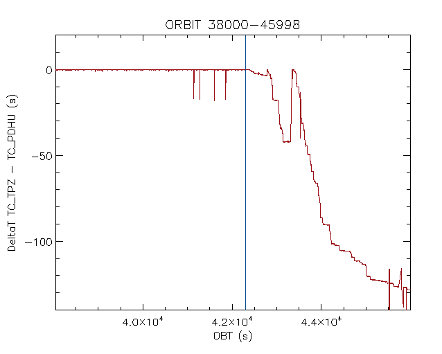

Introduzione
- E' stata condotta un'analisi di dettaglio sul problema del timing prima e dopo il 1 Luglio (leap second)
- Creazione di un algoritmo sulla base di eventi definiti a terra
- analisi è stata condotta utilizzando la TM di bordo ed I file ausiliari prodotti da TPZ

Figura 1. Errore sul tempo dall'orbita 38000 all'orbita 45998